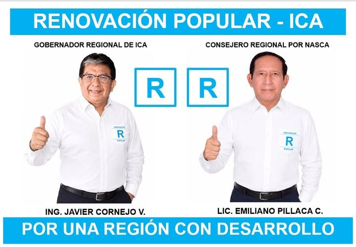

Más de tres décadas en cargos de dirección administrativa en salud y gobierno local en Ica — la misma disciplina de control presupuestario y gestión por resultados, cargo tras cargo.
Municipalidad Distrital de Vista Alegre, Nasca.
Dirección Regional de Salud de Ica y Unidad Ejecutora 402 Salud Palpa–Nasca.
Unidad Ejecutora 402 Salud Palpa–Nasca, Dirección Regional de Salud de Ica.
Hospital Ricardo Cruzado Rivarola de Nasca — gestión del sistema administrativo.
Concursos de ascenso, nombramientos, inventarios patrimoniales y procesos administrativos disciplinarios del Hospital Ricardo Cruzado Rivarola de Nasca.
Disciplina en el manejo de recursos públicos, con seguimiento riguroso de la ejecución del gasto.
Impulso a proyectos y programas que modernicen la gestión pública regional.
Organización de equipos de trabajo y análisis de procesos con enfoque sistémico.
Diseño de procedimientos orientados al cumplimiento de objetivos y metas concretas.
Egresado de la Escuela de Post Grado en Administración con mención en Gestión Empresarial de la Universidad Nacional "San Luis Gonzaga" de Ica, con colegiatura activa y habilitación vigente ante el Colegio Regional de Licenciados en Administración de Ica.
Deja tus datos si quieres ser voluntario, recibir novedades de la campaña o hacernos llegar una consulta. Te contactaremos directamente.